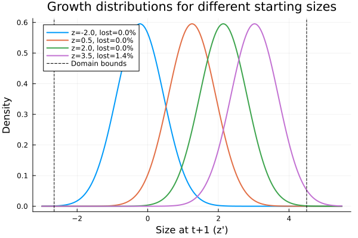
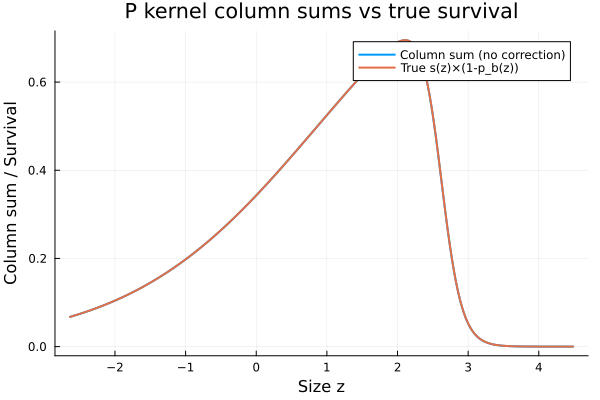
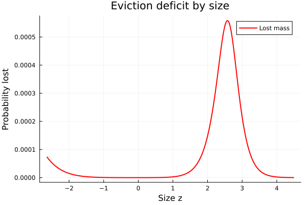
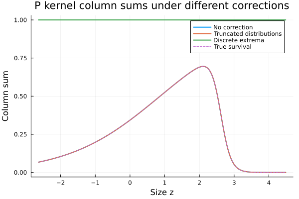
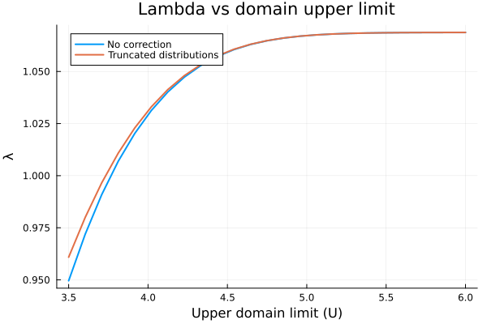

Eviction Correction
Overview
Eviction occurs when the growth distribution of an individual extends beyond the domain boundaries $[L, U]$, causing probability mass to be lost. This leads to underestimation of survival and can bias $\lambda$ and other demographic quantities.
This vignette demonstrates:
- How to diagnose eviction by examining column sums of the P kernel
- Three correction methods:
NoCorrection,TruncatedDistributions,DiscreteExtrema - The effect of correction on $\lambda$
We use the monocarp (Oenothera) model from the introductory vignette.
Setup
using IntegralProjectionModels
using Distributions
using LinearAlgebra
using PlotsModel Parameters
# Monocarp parameters (Kachi & Hirose / Rees & Rose)
surv_int = -0.65; surv_z = 0.75
flow_int = -18.0; flow_z = 6.9
grow_int = 0.96; grow_z = 0.59; grow_sd = 0.67
rcsz_int = -0.08; rcsz_sd = 0.76
seed_int = 1.0; seed_z = 2.2
p_r = 0.007
# Vital rates
s_z(z) = 1.0 / (1.0 + exp(-(surv_int + surv_z * z)))
p_bz(z) = 1.0 / (1.0 + exp(-(flow_int + flow_z * z)))
b_z(z) = exp(seed_int + seed_z * z)
c_0z1(z_prime) = pdf(Normal(rcsz_int, rcsz_sd), z_prime)
# Effective survival for P kernel: survive AND don't flower
P_survival(z) = s_z(z) * (1.0 - p_bz(z))
# Growth as a typed object (needed for TruncatedDistributions eviction)
growth = NormalGrowth(grow_int, grow_z, grow_sd)
# Fecundity function
F_z1z(z_prime, z) = p_bz(z) * b_z(z) * p_r * c_0z1(z_prime)F_z1z (generic function with 1 method)What Is Eviction?
Consider an individual at size $z$ near the upper boundary. Its expected size next year is $\mu = 0.96 + 0.59z$. If $z$ is large, a substantial fraction of the growth distribution $G(z'|z) = N(\mu, 0.67)$ lies above the upper limit $U$.
domain = ContinuousDomain(-2.65, 4.5, 250)
z = meshpoints(domain)
# Fraction of growth distribution above U for different sizes
z_examples = [-2.0, 0.5, 2.0, 3.5]
z_dense = range(-3.0, 5.5, length=500)
plt = plot(xlabel="Size at t+1 (z')", ylabel="Density",
title="Growth distributions for different starting sizes")
for zi in z_examples
mu = grow_int + grow_z * zi
d = Normal(mu, grow_sd)
frac_lost = 1.0 - cdf(d, 4.5)
plot!(plt, z_dense, pdf.(d, z_dense),
label="z=$(zi), lost=$(round(frac_lost*100, digits=1))%",
linewidth=2)
end
vline!(plt, [-2.65, 4.5], label="Domain bounds", linestyle=:dash, color=:black)
plt
Diagnosing Eviction: Column Sums
For the P kernel, each column $j$ should integrate (approximately) to the effective survival probability $s(z_j)(1 - p_b(z_j))$. If eviction is present, column sums will fall below the true survival probability.
h = step_size(domain)
# Build P kernel without correction
# Using NormalGrowth for all cases so TruncatedDistributions will work
P_nocorr = PKernel(CustomVitalRate(P_survival), growth, domain;
eviction=NoCorrection)
P_mat_nocorr = materialize(P_nocorr)
# Column sums should equal effective survival
col_sums_nocorr = vec(sum(P_mat_nocorr, dims=1))
true_survival = P_survival.(z)
plot(z, [col_sums_nocorr true_survival],
xlabel="Size z", ylabel="Column sum / Survival",
title="P kernel column sums vs true survival",
label=["Column sum (no correction)" "True s(z)×(1-p_b(z))"],
linewidth=2)
# Deficit: how much probability mass is lost
deficit = true_survival .- col_sums_nocorr
plot(z, deficit,
xlabel="Size z", ylabel="Probability lost",
title="Eviction deficit by size",
label="Lost mass",
linewidth=2, color=:red)
The deficit is largest for individuals at the upper end of the size range, where the growth distribution extends beyond $U = 4.5$.
Correction Method 1: Truncated Distributions
The TruncatedDistributions method divides the growth density by the CDF within the domain bounds:
$
G_{\text{trunc}}(z'|z) = \frac{G(z'|z)}{\Phi(U|\mu, \sigma) - \Phi(L|\mu, \sigma)} $
This ensures the growth distribution integrates to 1 over $[L, U]$. Note that TruncatedDistributions requires a typed growth rate (NormalGrowth or LogNormalGrowth) rather than a CustomVitalRate, so that the package can access the distribution parameters for the CDF calculation.
P_trunc = PKernel(CustomVitalRate(P_survival), growth, domain;
eviction=TruncatedDistributions)
P_mat_trunc = materialize(P_trunc)
col_sums_trunc = vec(sum(P_mat_trunc, dims=1))250-element Vector{Float64}:
0.06743503690126253
0.06879655177369087
0.07018348709857274
0.07159623342393001
0.07303518387226796
0.07450073400437329
0.07599328167535987
0.07751322688276364
0.07906097160649128
0.08063691964042831
⋮
1.0667361596916802e-5
8.770553267901817e-6
7.210801492488797e-6
5.928255806078243e-6
4.87368479976204e-6
4.006593687353247e-6
3.2936752359799133e-6
2.707535095116562e-6
2.2256429685929166e-6Correction Method 2: Discrete Extrema
The DiscreteExtrema method redistributes lost probability mass to the boundary mesh points. For each column, if the column sum is less than expected, the deficit is added to the first row (if $z$ is in the lower half) or the last row (if $z$ is in the upper half).
P_extrema = PKernel(CustomVitalRate(P_survival), growth, domain;
eviction=DiscreteExtrema)
P_mat_extrema = materialize(P_extrema)
col_sums_extrema = vec(sum(P_mat_extrema, dims=1))250-element Vector{Float64}:
0.9999999999999999
1.0000000000000002
1.0000000000000002
0.9999999999999999
1.0
1.0000000000000002
1.0
1.0000000000000002
1.0
0.9999999999999999
⋮
0.9999999999999999
1.0
1.0
1.0
1.0
1.0
1.0
0.9999999999999999
1.0Comparing Column Sums
plot(z, [col_sums_nocorr col_sums_trunc col_sums_extrema true_survival],
xlabel="Size z",
ylabel="Column sum",
title="P kernel column sums under different corrections",
label=["No correction" "Truncated distributions" "Discrete extrema" "True survival"],
linewidth=[2 2 2 1],
linestyle=[:solid :solid :solid :dash])
# Maximum absolute error in column sums
err_nocorr = maximum(abs.(col_sums_nocorr .- true_survival))
err_trunc = maximum(abs.(col_sums_trunc .- true_survival))
err_extrema = maximum(abs.(col_sums_extrema .- true_survival))0.999997774397689println("Max column sum error:")
println(" No correction: ", round(err_nocorr, sigdigits=4))
println(" Truncated distributions: ", round(err_trunc, sigdigits=4))
println(" Discrete extrema: ", round(err_extrema, sigdigits=4))Max column sum error:
No correction: 0.0005585
Truncated distributions: 4.271e-7
Discrete extrema: 1.0Effect on Lambda
# Build full kernels with each correction
F_kern = FKernel(CustomVitalRate(F_z1z), domain)
K_nocorr = P_mat_nocorr + materialize(F_kern)
K_trunc = P_mat_trunc + materialize(F_kern)
K_extrema = P_mat_extrema + materialize(F_kern)
λ_nocorr = real(eigen(K_nocorr).values[argmax(real.(eigen(K_nocorr).values))])
λ_trunc = real(eigen(K_trunc).values[argmax(real.(eigen(K_trunc).values))])
λ_extrema = real(eigen(K_extrema).values[argmax(real.(eigen(K_extrema).values))])5.169761984308968println("Lambda values:")
println(" No correction: ", round(λ_nocorr, digits=6))
println(" Truncated distributions: ", round(λ_trunc, digits=6))
println(" Discrete extrema: ", round(λ_extrema, digits=6))
println()
println("Difference from no correction:")
println(" Truncated distributions: ", round(λ_trunc - λ_nocorr, sigdigits=4))
println(" Discrete extrema: ", round(λ_extrema - λ_nocorr, sigdigits=4))Lambda values:
No correction: 1.059307
Truncated distributions: 1.059508
Discrete extrema: 5.169762
Difference from no correction:
Truncated distributions: 0.0002016
Discrete extrema: 4.11Effect of Domain Width
A wider domain reduces eviction but increases computation. Let us examine how $\lambda$ changes with the upper limit.
U_vals = range(3.5, 6.0, length=25)
λ_by_U_nocorr = Float64[]
λ_by_U_trunc = Float64[]
for U_test in U_vals
dom_test = ContinuousDomain(-2.65, U_test, 250)
# No correction
P_test = PKernel(CustomVitalRate(P_survival), growth, dom_test;
eviction=NoCorrection)
F_test = FKernel(CustomVitalRate(F_z1z), dom_test)
K_test = materialize(P_test) + materialize(F_test)
e = eigen(K_test)
push!(λ_by_U_nocorr, real(e.values[argmax(real.(e.values))]))
# Truncated
P_test_t = PKernel(CustomVitalRate(P_survival), growth, dom_test;
eviction=TruncatedDistributions)
K_test_t = materialize(P_test_t) + materialize(F_test)
e_t = eigen(K_test_t)
push!(λ_by_U_trunc, real(e_t.values[argmax(real.(e_t.values))]))
end
plot(U_vals, [λ_by_U_nocorr λ_by_U_trunc],
xlabel="Upper domain limit (U)",
ylabel="λ",
title="Lambda vs domain upper limit",
label=["No correction" "Truncated distributions"],
linewidth=2)
With eviction correction, $\lambda$ is stable across a wide range of upper limits. Without correction, $\lambda$ converges only as the domain becomes wide enough to capture essentially all of the growth distribution.
When Does Eviction Matter?
Eviction is most problematic when:
- Growth variance is large relative to the domain width
- Domain bounds are tight (close to the data range)
- Individuals near the boundaries have high survival
For this monocarp model, the growth standard deviation ($\sigma = 0.67$) is substantial relative to the domain width ($U - L = 7.15$), so eviction is noticeable but modest. For species with narrower size ranges or larger growth variance, the effect can be much larger.
Summary
| Correction Method | Description | Column Sums | Lambda Effect |
|---|---|---|---|
NoCorrection | No adjustment | Below true survival near boundaries | Slightly biased low |
TruncatedDistributions | Divide by CDF within bounds | Match true survival | Corrected |
DiscreteExtrema | Redistribute lost mass to boundaries | Match true survival | Corrected |
Both correction methods restore the column sums to match the true survival probability. TruncatedDistributions rescales the growth distribution, while DiscreteExtrema places lost mass at the domain edges. For most applications, TruncatedDistributions is preferred as it maintains the shape of the growth distribution.